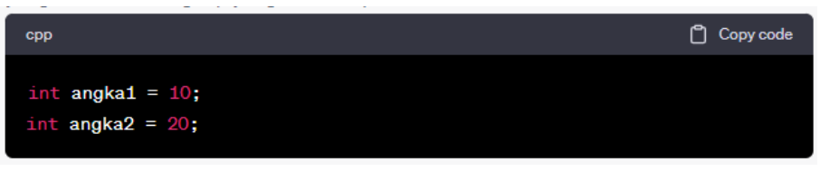

Data Relasional
1. DEFINISI DATABASE RELASIONAL
Database relasional adalah tipe database yang didasarkan pada model data relasional. Model data ini menggunakan tabel (atau relasi) sebagai entitas utama untuk menyimpan dan mengelola data. Database relasional menyimpan data dalam bentuk tabel yang terdiri dari baris dan kolom. Setiap tabel mewakili jenis entitas tertentu, dan setiap baris dalam tabel mewakili satu catatan atau tupel data. Sementara itu, kolom dalam tabel mewakili atribut atau field yang mendefinisikan jenis data yang disimpan.
Beberapa karakteristik utama dari database relasional meliputi:
- Tabel: Data disimpan dalam tabel yang terdiri dari baris dan kolom. Setiap tabel memiliki nama unik dan harus memiliki kolom kunci utama (primary key) yang unik untuk mengidentifikasi setiap baris.
- Kunci Utama (Primary Key): Kolom kunci utama adalah kolom yang memiliki nilai unik untuk setiap baris dalam tabel. Ini digunakan untuk mengidentifikasi secara unik setiap tupel dalam tabel.
- Hubungan: Database relasional memungkinkan untuk menghubungkan tabel berdasarkan nilai kunci utama. Ini menciptakan hubungan antara tabel, yang memungkinkan Anda untuk mengakses dan mengambil data dari berbagai tabel dengan menggabungkan informasi dari tabel yang berbeda.
- Normalisasi: Normalisasi adalah proses desain database yang mengorganisasi data ke dalam tabel dengan cara yang mengurangi redundansi dan meningkatkan efisiensi penyimpanan dan pemutakhiran data.
- SQL (Structured Query Language): SQL adalah bahasa yang digunakan untuk mengelola dan mengambil data dari database relasional. Dengan SQL, Anda dapat membuat, mengedit, dan menghapus data, serta mengambil data sesuai dengan kriteria tertentu.
- Integritas Data: Database relasional mendukung integritas data dengan menggunakan berbagai jenis kendala, seperti kunci referensi (foreign keys) dan kendala unik (unique constraints), untuk memastikan bahwa data tetap konsisten dan benar.
- Transaksi: Database relasional mendukung konsep transaksi, yang memungkinkan untuk mengelola operasi yang melibatkan beberapa tindakan dalam database dengan benar. Transaksi harus bersifat atomik (terjadi sepenuhnya atau tidak sama sekali), konsisten (database berada dalam keadaan yang benar sebelum dan setelah transaksi), terisolasi (transaksi tidak saling berpengaruh), dan tahan terhadap kegagalan (bahkan dalam kasus kegagalan sistem).
Database relasional adalah salah satu tipe database yang paling umum digunakan di seluruh dunia dan digunakan dalam berbagai aplikasi dan sistem, termasuk sistem manajemen basis data (Database Management System atau DBMS) seperti MySQL, PostgreSQL, Microsoft SQL Server, dan Oracle Database.
2. Model Data konseptual dan fisik
Model data dalam database relasional terdiri dari tiga tingkat: model data konseptual, model data logis, dan model data fisik. Setiap tingkat ini memiliki fokus dan abstraksi yang berbeda dalam merancang dan mengelola basis data.
a. Model Data Konseptual
- Model data konseptual adalah tingkat tertinggi dalam perancangan database relasional.
- Ini merupakan representasi abstrak dari seluruh database dan tidak terkait dengan detail teknis seperti tabel atau indeks.
- Model data konseptual menggambarkan struktur data secara umum, entitas utama, hubungan antara entitas, dan atribut utama dari database.
Salah satu alat yang digunakan untuk menggambarkan model data konseptual adalah Entity-Relationship Diagram (ERD), yang menggambarkan entitas (tabel) dan hubungan antara entitas tersebut secara konseptual.
- Salah satu alat yang digunakan untuk menggambarkan model data konseptual adalah Entity-Relationship Diagram (ERD), yang menggambarkan entitas (tabel) dan hubungan antara entitas tersebut secara konseptual.
b. Model Data Logis
- Model data logis berada di tingkat yang lebih rendah dibandingkan dengan model data konseptual.
- Ini berfokus pada cara data disimpan dan diorganisasi dalam database, termasuk tabel, kolom, dan hubungan antara tabel.
- Model data logis menciptakan struktur data yang sesuai dengan kebutuhan aplikasi atau sistem, dan seringkali mengikuti model data konseptual.
- Pada tingkat ini, pemodelan data menggunakan diagram Entitas-Relasi yang lebih rinci, yang mencakup atribut entitas dan relasi antar entitas.
c. Model Data Fisik
- Model data fisik adalah tingkat terendah dalam perancangan database relasional.
- Ini berfokus pada cara data sebenarnya disimpan di perangkat keras komputer, termasuk bagaimana tabel disimpan dalam bentuk file, indeks dibuat, dan struktur penyimpanan data lainnya.
- Pemilihan tipe data, indeks, partisi, dan optimalisasi kinerja adalah aspek penting dari model data fisik.
- Model data fisik akan sangat bergantung pada sistem manajemen basis data (DBMS) yang digunakan, seperti Oracle, MySQL, atau Microsoft SQL Server.
Penting untuk memahami perbedaan antara ketiga tingkat ini dalam perancangan database. Model data konseptual adalah abstrak dan lebih berfokus pada representasi data secara keseluruhan, sementara model data logis dan fisik lebih terkait dengan implementasi teknis di tingkat tabel dan penyimpanan fisik. Transformasi dari model data konseptual ke model data logis dan akhirnya ke model data fisik merupakan langkah-langkah yang diperlukan dalam merancang dan mengimplementasikan database relasional yang efisien dan sesuai dengan kebutuhan aplikasi.
2.1 Model Data Konseptual
Model data konseptual adalah representasi abstrak dari seluruh database yang digunakan untuk menggambarkan struktur data secara umum tanpa memperhatikan detail teknis terkait dengan cara data disimpan atau diakses. Model data konseptual mencerminkan pandangan tingkat tinggi tentang bagaimana data diorganisasi dan bagaimana entitas dan hubungan antara entitas direpresentasikan dalam basis data. Dalam model data konseptual, fokus utamanya adalah pada entitas (yang biasanya menggambarkan objek di dunia nyata atau dalam konteks aplikasi) dan hubungan antara entitas tersebut. Model data konseptual biasanya menggunakan notasi seperti Entity-Relationship Diagrams (ERD) atau notasi konseptual lainnya untuk menggambarkan:
- Entitas: Objek, konsep, atau objek dunia nyata yang memiliki atribut yang dapat disimpan dalam database. Contoh entitas bisa berupa "Mahasiswa," "Buku," atau "Karyawan."
- Atribut: Informasi yang terkait dengan entitas tertentu. Misalnya, atribut untuk entitas "Mahasiswa" bisa mencakup "Nama," "NIM," "Alamat," dan lain-lain.
- Hubungan: Keterkaitan antara entitas. Hubungan ini dapat dinyatakan sebagai "One-to-One" (satu-satu), "One-to-Many" (satu-ke-banyak), atau "Many-to-Many" (banyak-ke-banyak), dan mereka memiliki kardinalitas yang dapat dijelaskan.
- Kunci: Kunci adalah atribut atau kombinasi atribut yang digunakan untuk mengidentifikasi setiap instance dari entitas secara unik. Kunci utama (Primary Key) adalah kunci yang paling sering digunakan.
Model data konseptual membantu dalam pemahaman struktur data secara keseluruhan dan hubungan antara entitas dalam database tanpa memperhatikan aspek teknis implementasi. Ini adalah langkah awal dalam perancangan database relasional, dan berfungsi sebagai landasan untuk mengembangkan model data logis dan fisik yang lebih rinci serta implementasi database sebenarnya dalam sistem manajemen basis data (DBMS).
2.2 Model Data Fisik
Model data fisik adalah representasi teknis dan rinci dari cara data disimpan dan diakses dalam sistem manajemen basis data (DBMS) atau dalam lingkungan penyimpanan fisik yang sesungguhnya. Model data fisik berfokus pada aspek teknis dan implementasi dari sebuah basis data, termasuk struktur penyimpanan, indeks, konfigurasi perangkat keras, dan optimasi kinerja.
Berikut beberapa hal yang tercakup dalam model data fisik:
- Tabel dan Kolom: Model data fisik menggambarkan bagaimana tabel-tabel yang ada dalam database relasional diimplementasikan dalam penyimpanan fisik. Ini mencakup informasi tentang nama tabel, kolom, tipe data kolom, dan batasan integritas data.
- Indeks: Model data fisik mencakup indeks yang dibuat untuk mendukung pencarian dan pengambilan data yang efisien. Indeks membantu meningkatkan kinerja query dengan mempercepat pencarian data dalam tabel.
- Partisi: Dalam beberapa DBMS, model data fisik mencakup informasi tentang bagaimana tabel dapat dipecah menjadi partisi yang lebih kecil. Partisi memungkinkan manajemen dan kinerja data yang lebih baik.
- Cluster dan Fragmentasi: Model data fisik dapat merinci apakah ada pengelompokan (clustering) atau fragmentasi data yang diterapkan pada tabel atau kolom tertentu.
- Tabel Temporer: Model data fisik dapat mencakup tabel-temporer yang digunakan untuk penyimpanan data sementara dalam operasi tertentu.
- Konfigurasi Perangkat Keras: Ini termasuk informasi tentang lokasi fisik database (misalnya, server mana yang digunakan), spesifikasi perangkat keras, dan pengaturan yang diperlukan untuk menjalankan DBMS.
- Optimasi Kinerja: Model data fisik mencakup strategi dan konfigurasi yang digunakan untuk mengoptimalkan kinerja database. Ini dapat mencakup pengaturan cache, tuning query, dan indeks yang tepat.
- Rencana Backup dan Restore: Informasi tentang bagaimana data disimpan dan dilakukan backup serta prosedur pemulihan jika terjadi kegagalan.
Model data fisik berada di lapisan terbawah dalam hierarki perancangan basis data. Ini memberikan pandangan teknis yang sangat spesifik tentang bagaimana data diolah, disimpan, dan diakses. Biasanya, perancangan basis data dimulai dengan model data konseptual, kemudian diterjemahkan menjadi model data logis, dan akhirnya diimplementasikan sebagai model data fisik dalam DBMS.
3. Entitas dan Atribut
Dalam konteks database relasional, entitas dan atribut adalah dua komponen utama yang digunakan untuk mendefinisikan dan mengorganisasi data. Ini adalah konsep dasar dalam perancangan dan pengelolaan database. Mari kita bahas keduanya secara lebih rinci:
a. Entitas
- Entitas mengacu pada objek, konsep, atau entitas dunia nyata yang ingin direpresentasikan dalam database. Ini bisa berupa objek fisik seperti "Mahasiswa," "Buku," atau "Karyawan," atau bahkan konsep abstrak seperti "Transaksi" atau "Pesanan."
- Dalam model data konseptual, entitas direpresentasikan sebagai tabel dalam database relasional. Setiap baris dalam tabel ini mewakili satu instance atau catatan dari entitas tersebut.
- Setiap entitas biasanya memiliki atribut yang menggambarkan karakteristik atau properti unik dari entitas tersebut. Sebagai contoh, entitas "Mahasiswa" mungkin memiliki atribut "NIM," "Nama," "Alamat," dan "Tanggal Lahir."
b. Atribut
- Atribut adalah karakteristik atau properti dari entitas yang mendefinisikan data yang dapat disimpan dalam entitas tersebut. Atribut menggambarkan informasi yang relevan tentang entitas tersebut.
- Dalam konteks database relasional, atribut direpresentasikan sebagai kolom dalam tabel yang sesuai dengan entitas. Setiap kolom akan memiliki nama dan tipe data yang menentukan jenis data yang dapat disimpan dalam atribut tersebut.
- Sebagai contoh, untuk entitas "Mahasiswa," atribut-atributnya mungkin termasuk:
- "NIM" (Nomor Induk Mahasiswa) dengan tipe data string.
- "Nama" dengan tipe data string.
- "Alamat" dengan tipe data string.
- "Tanggal Lahir" dengan tipe data tanggal.
Penting untuk merencanakan dengan cermat entitas dan atribut dalam perancangan database relasional. Identifikasi entitas yang tepat dan atribut-atribut yang diperlukan adalah langkah pertama dalam merancang struktur basis data yang efektif. Selain itu, entitas dan atribut membentuk dasar untuk menciptakan tabel-tabel dalam basis data relasional dan untuk mengatur relasi antar tabel. Hubungan antara entitas dan atribut juga menciptakan struktur data yang terorganisasi dengan baik yang dapat mendukung pengambilan data dan analisis yang efisien.
4. Keyword / Pengenal Unik
Keyword atau pengenal unik adalah istilah yang digunakan dalam berbagai konteks untuk merujuk pada kata, frasa, atau simbol yang memiliki sifat unik atau istimewa dalam suatu konteks tertentu. Pengenal unik ini digunakan untuk mengidentifikasi atau membedakan entitas atau elemen tertentu dalam suatu sistem atau domain.
Berikut beberapa contoh penggunaan keyword atau pengenal unik dalam berbagai konteks:
a. Pengenalan Programming
Dalam pemrograman, pengenal unik adalah nama yang digunakan untuk mengidentifikasi variabel, fungsi, kelas, atau objek dalam kode program. Setiap pengenal harus unik dalam konteksnya. Misalnya, dalam bahasa pemrograman C++, Anda harus memberikan nama variabel yang unik dalam lingkup yang sama, seperti:

b. Pengenal Unik dan Basis Data
- Dalam basis data, pengenal unik adalah atribut atau kombinasi atribut yang digunakan untuk mengidentifikasi setiap baris atau tupel dalam tabel secara unik. Ini dikenal sebagai kunci utama (primary key).
- Sebagai contoh, dalam tabel "Mahasiswa," NIM (Nomor Induk Mahasiswa) dapat digunakan sebagai pengenal unik atau kunci utama.
c. Pengenal Unik dalam SEO:
Dalam konteks optimisasi mesin pencari (SEO), keyword adalah kata kunci atau frasa yang digunakan dalam konten web untuk meningkatkan peringkat dalam hasil mesin pencari. Ini membantu orang menemukan situs web atau konten yang relevan dengan pencarian mereka.
d. Pengenal Unik dalam Sistem Keamanan:
Dalam keamanan komputer, pengenal unik sering digunakan dalam autentikasi, seperti kata sandi atau token yang hanya dikenal oleh pengguna yang sah.
e. Pengenal Unik dalam Matematika:
Dalam matematika, pengenal unik dapat merujuk pada angka atau simbol yang digunakan untuk mengidentifikasi entitas tertentu, seperti identitas aljabar dalam teori grup.
Pengenal unik adalah penting dalam banyak aspek kehidupan dan teknologi karena mereka membantu dalam pengidentifikasian dan pembedaan antara berbagai entitas atau elemen. Mereka memungkinkan sistem untuk mengelola, mengakses, dan mengambil data dengan efisien dan akurat.